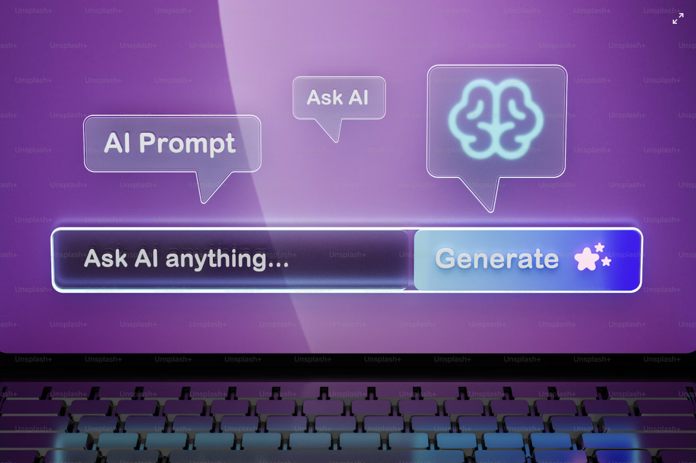

Procesamiento del Lenguaje Natural (NLP)
El Procesamiento del Lenguaje Natural (NLP, por sus siglas en inglés) es una rama de la inteligencia artificial
que permite a las máquinas comprender, interpretar, generar y responder al lenguaje humano. El principal
objetivo del NLP es cerrar la brecha entre la comunicación humana y la capacidad de las computadoras para
entender esa comunicación. Este campo combina lingüística computacional, estadística, aprendizaje
automático y redes neuronales profundas para procesar datos textuales y orales.
Una de las aplicaciones más comunes del NLP son los asistentes virtuales como Siri, Alexa y ChatGPT, que
pueden responder preguntas, mantener conversaciones y realizar tareas siguiendo órdenes habladas
o escritas. Otros ejemplos incluyen traductores automáticos, análisis de sentimientos en redes sociales, y
sistemas de corrección gramatical. Estas herramientas han evolucionado rápidamente gracias al aumento en
la potencia de cómputo y la disponibilidad de grandes volúmenes de datos lingüísticos.

Para lograr estos avances, se utilizan técnicas como el etiquetado de partes del discurso, la lematización, el
análisis sintáctico y semántico, y los modelos de lenguaje entrenados en grandes corpus de texto. Los
transformers, una arquitectura clave detrás de modelos como GPT y BERT, han revolucionado el NLP al
permitir que las máquinas comprendan el contexto completo de una oración en lugar de procesar palabra por palabra
de manera secuencial.
El reto principal del NLP es capturar la complejidad del lenguaje humano, que está lleno de ambigüedades,
ironías, modismos y múltiples significados. A pesar de los avances, aún existen desafíos en el manejo del
lenguaje en contextos culturales diversos, la detección de desinformación y la generación de texto ético. Sin
embargo, el potencial del NLP en campos como la salud, la educación y el derecho es inmenso y sigue en expansión.